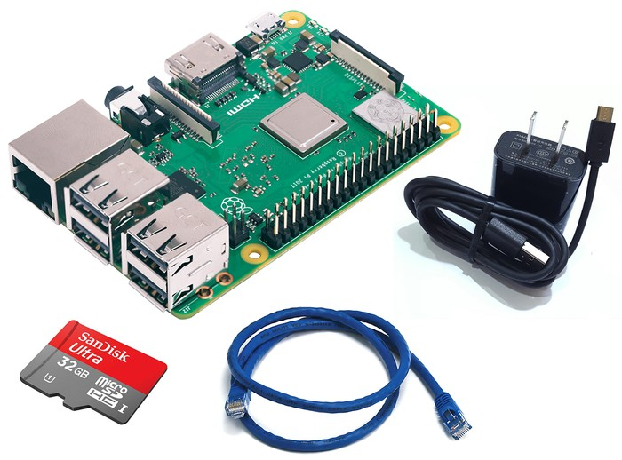
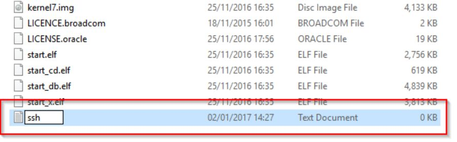
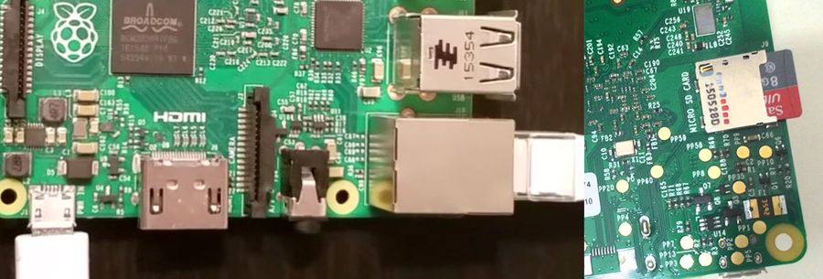
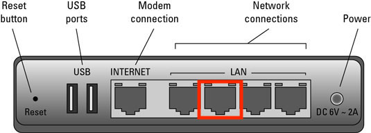
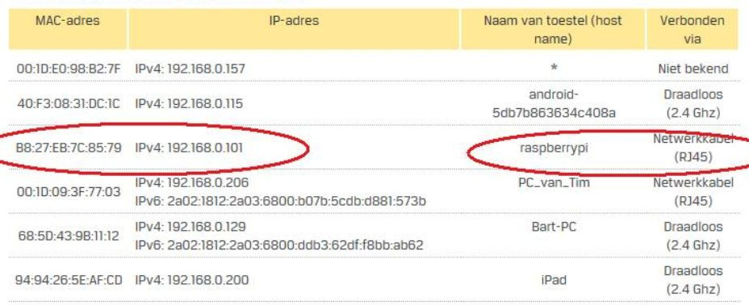
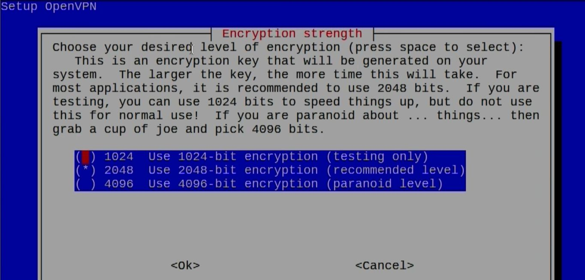
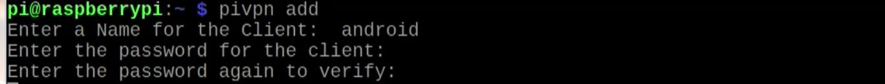
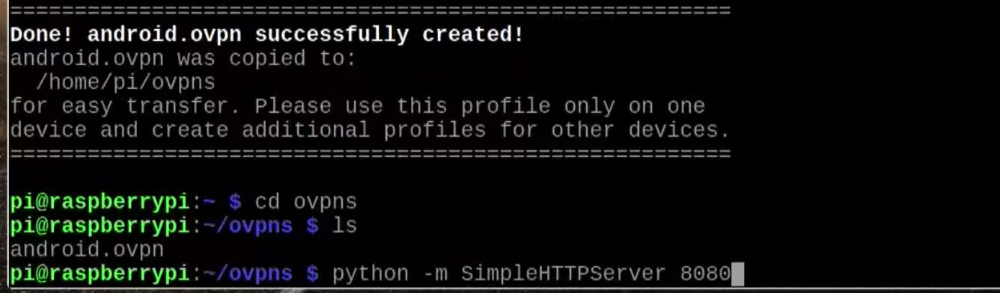
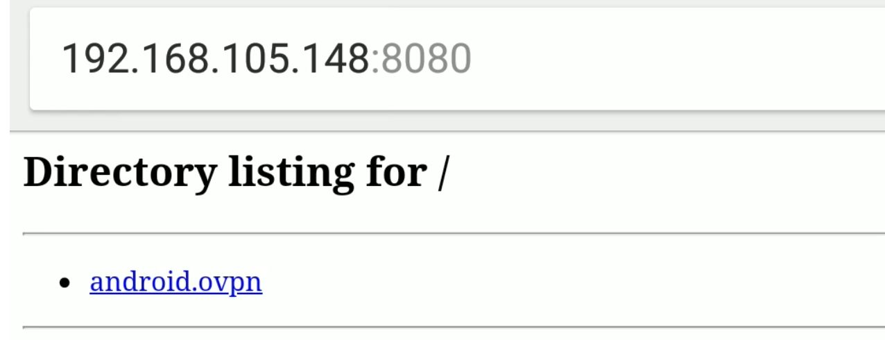
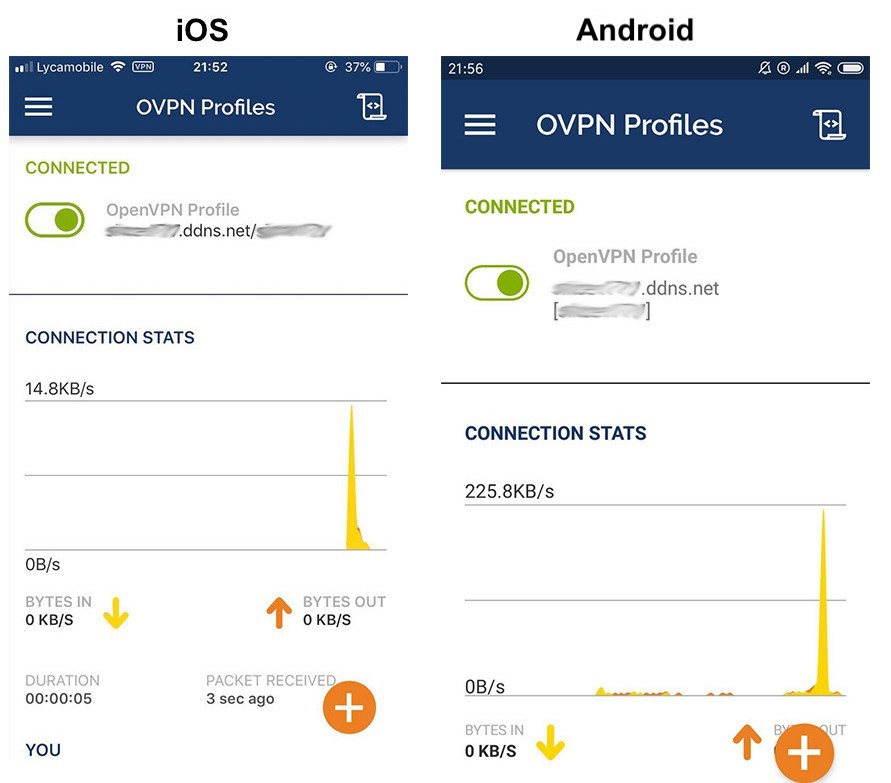

The tiny, inexpensive Raspberry Pi has a very low power consumption, which makes it a great always-on VPN (Virtual Private Network) server. With a VPN, you'll get secure access to your home network when you're on the go or on public networks.
What you will need
The Raspberry Pi ships as just the single-board minicomputer. There are a few additional components you will need before you can get started.
- Raspberry Pi 3 (B+ is better) Amazon link
- 16 GB Micro SD Card (32GB is better)
- 5V 2.0A Micro USB Phone Charger (5V 2.5A is better)
- Ethernet Cable - 3 Feet

Set Up Raspberry Pi
1. Download Raspbian OS Image
Head on over HERE to grab a copy of the Raspbian (Debian-based Unix family). The RASPBIAN STRETCH LITE will do.
2. Write Image to Micro-SD Card
Write the image to micro-SD card. You can find detailed instructions HERE. Go to "Writing an image to the SD card" section.
3. Add SSH File to the Micro-SD Card Root
Enable SSH by placing an empty file named ssh (without any extension) onto the root of the micro-SD card:

4. Boot your Pi
Hook up your prepared micro-SD card, power cable and network cable into the Pi.

Plug another head of network cable into your Router.

5. Find your Pi's IP Address
To configure your Pi, you need the IP address. You can log into your Router and find this in your Router's DHCP allocation table:

Note: Please set router always give this raspberrypi a fixed local IP so that you can access the raspberrypi via the same IP no matter it reboots or reconnects to the router.
6. SSH into your Pi
If you are using macOS or Linux, open your Terminal and use SSH directly to access the Pi. The default credentials are:
username: pi
password: raspberry
Connect using your Raspberry Pi's IP address:
ssh pi@192.168.X.X
If you are using Windows, PuTTY is recommended for SSH. Guide link
Tips: You can set Router Port Forwarding to open a custom port for your raspberrypi to make SSH accessible from outside of your local network. You may need to modify your SSH config to make it work.
Set Up No-IP Service
The free No-IP service will make sure you can always connect to your VPN, even if your IP changes. For example, if your home network provider changes your IP, the No-IP Dynamic Update Client updates your hostname with the current IP. Thus, you can always get to your home Raspberry Pi via a fixed hostname.
Free Sign Up HERE.
Login and go to
Dynamic DNS->Create Hostname. Choose Record TypeDNS Host (A). Note: You need to click a link in a reminder email every 30 days to renew your free hostname.Go to
Dynamic DNS->Dynamic Update Client, chooseLinuxon the top. Follow the instructions to install DUC in your Pi.Use
crontabto make it can be auto-restarted when Pi reboots.sudo crontab -eAdd the following line to the file and save.
@reboot sudo /usr/local/bin/noip2You can verify cron job executing history:
grep cron /var/log/syslog
Router Port Forwarding
Port forwarding is the process of configuring a router to make a device that is connected to it accessible for other devices from outside of your local network. Port forwarding uses an IP address plus port number to route network requests to specific devices. This step you will want to do is to forward your Raspberry Pi's VPN port on your router. You can go to Port Forwarding Guide to find out how to do this for your own router.
I recommend to keep a range of ports open for your raspberrypi for future uses.
For this tutorial, you can set:
UDP port range: 12569 ~ 12579
TCP port range: 12539 ~ 12549
Set Up PiVPN
PiVPN is super easy to install. As root run in the terminal:
curl -L https://install.pivpn.io | bash
Click
OKandYESall the way.Protocol->UDP.OpenVPN Port->12570. I recommend not to use the default 1194. Note: the port you enter here should be enabled for forwarding in your router.For
Encryption strength, I recommend1024here. It is much more safe to use 2048, but it might take too long to generate the key.
Public IP or DNS->DNS Entry. Then enter your No-IP hostname. e.g.example.ddns.net. ChooseGoogleas yourDNS Provider.Reboot->Yes.Now you can add your PiVPN profiles.
pivpn add
Set up a simple HTTP server for your devices to download
*.ovpnprofiles.python -m SimpleHTTPServer 8080
VPN Connect on your Personal Device
You've just set up you personal VPN server ! Let's make it happen on your devices!
On your device's web browser, enter
your_raspberry_local_ip:8080and download your*.ovpnprofile into your device.
You can search for
OpenVPNand install an OpenVPN client on your device.Open OpenVPN client. Import your downloaded
profile. Enter your VPN user password.Congrats !!!
